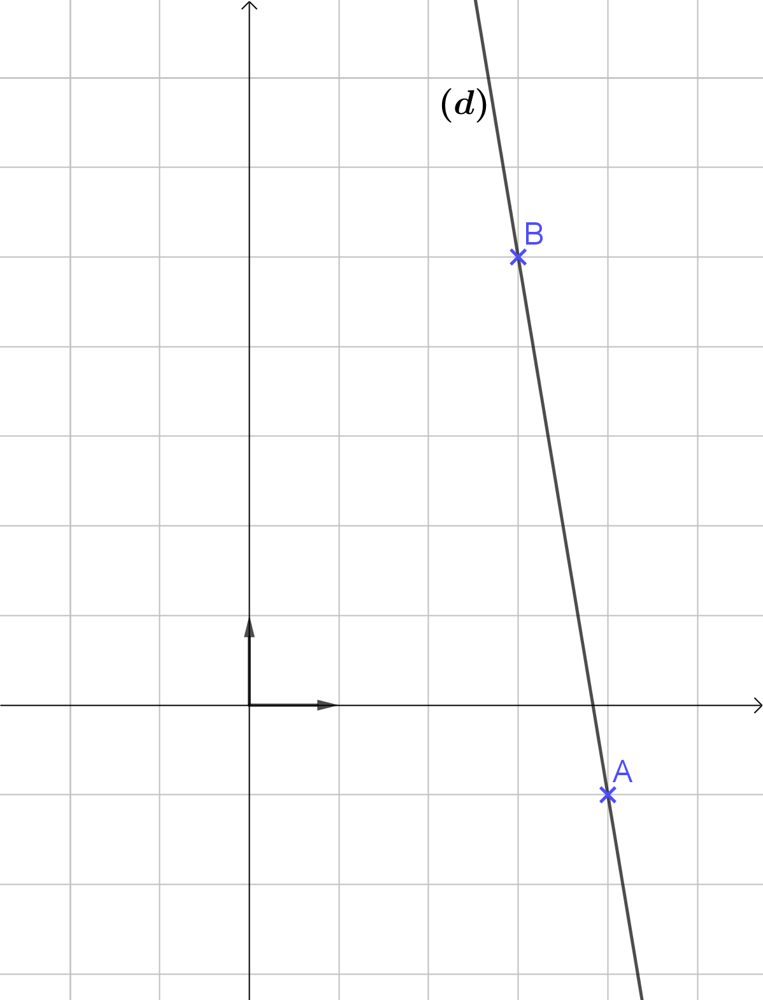

Droites du plan
Vecteur directeur d’une droite
Définition : Vecteur directeur
Definition
Soit $\mathscr{D}$ est une droite du plan.
On appelle vecteur directeur de $\mathscr{D}$ tout vecteur non nul $\vec{u}$ qui possède la même direction que la droite $\mathscr{D}$.
Methode
Déterminer graphiquement un vecteur directeur d’une droite
❓ Donner des vecteurs directeurs des droites $d_1$, $d_2$, $d_3$ et $d_4$.

Réponse
- Pour $\textcolor{red}{d_1}$ : $\textcolor{red}{\vec{a}}\begin{pmatrix} 1 \\ 2\end{pmatrix}$ ou $\textcolor{red}{\vec{b}}\begin{pmatrix} 2 \\ 4 \end{pmatrix}$ ou encore $\textcolor{red}{\vec{c}}\begin{pmatrix} -1 \\ -2\end{pmatrix}$.
- Pour $d_2$ : $\textcolor{green}{\vec{d}\begin{pmatrix} 6 \\ 0 \end{pmatrix}}$
- Pour $d_3$ : $\textcolor{blue}{\vec{u}\begin{pmatrix} 1 \\ -1\end{pmatrix}}$
- Pour $d_4$ : $\textcolor{violet}{\vec{v}\begin{pmatrix} 0 \\ 2\end{pmatrix}}$

$~$
Équation cartésienne d’une droite
Définition et propriétés : Équation cartésienne
Definition
Toute droite $\mathscr{D}$ admet une équation de la forme :
$$\boxed{ax + by + c = 0}\qquad\text{avec }a\neq 0\text{ et }b\neq 0$$
Cette équation est appelée équation cartésienne de la droite $\mathscr{D}$.
Prop
Un vecteur directeur de $\mathscr{D}$ est $\boxed{\vec{u}\coord{-b}{a}}$.
Exemple
Soit une droite $(d)$ d’équation cartésienne $~\textcolor{blue}{4x-5y-1=0}$
On a $~a=4~,~b=-5~,~c=-1~$ donc le vecteur $\textcolor{green}{\vec{u}\coord{5}{4}}$ est un vecteur directeur de $(d)$.

Theoreme
L’ensemble des points $~M\left(x ; y\right)~$ tels que $~ax + by + c = 0~$ avec $~\left( a ;b \right) \neq \left( 0 ;0 \right)~$ est une droite $\mathscr{D}$ de vecteur directeur $~\vec{u}\begin{pmatrix}-b\\a\end{pmatrix}~$.
Methode
Déterminer une équation cartésienne à partir d’un point et d’un vecteur directeur

❓ Déterminer une équation cartésienne de la droite $(d)$ passant par le point $A\left(3 ; 1\right)$ et de vecteur directeur $~\vec{u}\begin{pmatrix}-1\\5\end{pmatrix}$.
Méthode 1️⃣ :
Soit un point $M(x ; y)$ de la droite $(d)$.
Les vecteurs $~\textcolor{green}{\vec{AM}}~$ et $~\textcolor{blue}{\vec{u}}~$ sont colinéaires.
On a $\quad\vec{AM}\begin{pmatrix}x - 3 \\y - 1 \end{pmatrix}$ et $\vec{u}\begin{pmatrix} - 1 \\5 \end{pmatrix}$
$$ \begin{aligned} \textcolor{green}{\vec{AM}}\text{ et }\textcolor{blue}{\vec{u}}\text{ colinéaires } & \Lrarr \det\left( \vec{\text{AM}} ;\vec{u} \right) = 0 \\ \quad & \Lrarr \left| \begin{matrix}x - 3 & - 1 \\ y - 1 & 5 \end{matrix} \right| = 0 \\ \quad & \Lrarr 5(x-3)-(y-1)(-1)=0 \\ \quad & \Lrarr 5x+y-16=0 \end{aligned} $$
Une équation cartésienne de $(d)$ est : $~5x+y-16=0~$
Méthode 2️⃣ :
Le vecteur $\vec{u}\begin{pmatrix} \textcolor{blue}{-1}\\\textcolor{green}{5}\end{pmatrix}$ est un vecteur directeur de $(d)$ donc l’équation de la droite est de la forme :
$$\textcolor{green}{5}x+\textcolor{blue}{1}y+c=0$$ Le point $A\left(3 ; 1\right)$ appartient à la droite $(d)$ donc ses coordonnées vérifient l’équation :
$$ \begin{aligned} 5x_A+y_A+c=0 & \Lrarr 5\times 3+ 1 +c=0 \\ & \Lrarr 16 + c=0 \\ & \Lrarr c=-16 \end{aligned} $$
Une équation cartésienne de $(d)$ est : $~5x+y-16=0$
Équation réduite d’une droite
De l’équation cartésienne à l’équation réduite
Rem
Si $b \neq 0$, alors l’équation cartésienne $ax + by + c = 0$ de la droite $(d)$ peut être ramenée à une équation réduite :
$$y = \textcolor{red}{-\frac{a}{b}}x \textcolor{blue}{-\frac{c}{b}}\qquad\text{ou}\qquad y = \textcolor{red}{m}x +\textcolor{blue}{p}$$
On note $\quad\textcolor{red}{m = -\cfrac{a}{b}}\quad$ et $\quad\textcolor{blue}{p = -\cfrac{c}{b}}$
Vocabulaire
- $\textcolor{red}{m}$ est la pente ou le coefficient directeur de $(d)$.
- $\textcolor{blue}{p}$ est appelé l’ordonnée à l’origine de $(d)$.

Exemple
Soit $(d)$ une droite d’équation cartésienne $\quad 4x + y - 6 = 0$
$$ \begin{array}{rrl} ~ & 4x+y-6 & =0 \\ \Lrarr & y-6 & =-4x \\ \Lrarr & y & =-4x+6 \end{array} $$
Son équation réduite est : $y = \textcolor{red}{-4}x + \textcolor{blue}{6}$
Rem
Si $b=0$, alors l’équation cartésienne $ax+by+c=0$ de la droite $(d)$ peut être ramenée à l’équation réduite : $$x=\textcolor{green}{\cfrac{-c}{a}}$$
Dans ce cas, la droite $(d)$ est parallèle à l’axe des ordonnées.
Propriété : Équation réduite
Prop
Soit $\left(O;\vec{i},\vec{j}\right)$ un repère du plan. Soit $\mathscr{D}$ une droite du plan.
-
Si $\mathscr{D}$ est parallèle à l’axe des ordonnées :
- L’équation de $\mathscr{D}$ est de la forme $\quad x = \textcolor{green}{n}\qquad$ où $~\textcolor{green}{n}\in\R$.
-
Si $\mathscr{D}$ n’est pas parallèle à l’axe des ordonnées :
- L’équation de $\mathscr{D}$ est de la forme $\quad y = \textcolor{red}{m}x + \textcolor{blue}{p}\qquad$ où $~\textcolor{red}{m}\in\R~$ et $~\textcolor{blue}{p}\in\R$.
Exemple
-
$D$ a pour équation $x = \textcolor{green}{3}$
-
$D^\prime$ a pour équation $y = \textcolor{red}{3}x + \textcolor{blue}{2}$
- Son ordonnée à l’origine est $\textcolor{blue}{2}$
- Son coefficient directeur est $\textcolor{red}{+3}$.
Methode
Représenter graphiquement une droite d’équation réduite
❓ Tracer les droites $d_1$, $d_2$ et $d_3$ d’équations réduites respectives :
- $y = 2x + 3$
- $y = 4$
- $x = 3$
La droite $~d_1~$ d’équation $~y =2x +3~$ a pour ordonnée à l’origine $3$.
Donc le point $~A\left(0;3\right)~$ appartient à la droite $~d_1~$.
Soit $~B~$ le point d’abscisse $1$ appartenant à la $~d_1~$.
Les coordonnées de $~B~$ vérifient l’équation de $~d_1~$, donc :
$$ \begin{aligned} y_B & = 2\times x_B + 3 \\ & = 2\times (1) + 3 = 5 \end{aligned} $$
Le point $~B\left(1;5\right)~$ appartient à la droite $~d_1~$.
On peut ainsi tracer la droite $~d_1~$ passant par $~A\left(0;3\right)~$ et $~B\left(1;5\right)~$.
La droite $~d_2~$ d’équation $~y = 4~$ est l’ensemble des points dont l’ordonnée est égale à $4$.
$~d_2~$ est donc la droite parallèle à l’axe des abscisses coupant l’axe des ordonnées au point de coordonnées $~\left(0;4\right)~$
La droite $~d_3~$ d’équation $~x=3~$ est l’ensemble des points dont l’abscisse est égale à $3$.
$~d_3~$ est donc la droite parallèle à l’axe des ordonnées coupant l’axe des abscisses au point de coordonnées $~\left(3;0\right)~$
Propriété réciproque
Prop
Soit $~\left(O;\vec{i},\vec{j}\right)~$ un repère du plan et $~m~$, $~p~$, $~n~$ trois nombres réels, $~m~$ étant non nul.
L’ensemble des points $~M~$ du plan dont les coordonnées $~\left(x;y\right)~$ tels que $~y = mx + p~$ ou $~x = n~$ ,est une droite.
Methode
Vérifier si un point appartient à une droite d’équation donnée
❓ Les points $~A\left(6.4~;~42\right)~$ et $~B\left(346~; 2419\right)~$ appartiennent-ils à $~(d)~$ d’équation $~y=7x-3~$ ?
Dire que le point $~A\left(6.4~; 42\right)~$ appartient à la droite $~(d)~$ d’équation $~y=7x-3~$ revient à dire que les coordonnées de $~A~$ vérifient l’équation de $~(d)~$.
$$ \begin{aligned} 7\times x_A-3 & = 7\times 6.4-3 \\ & =41.8\neq 42 \\ \end{aligned} $$
Donc $~y_A \neq 7\times x_A-3\Rarr~$ Le point $~A~$ n’appartient pas à $~(d)~$.
Dire que le point $~B\left(346~; 2419\right)~$ appartient à la droite $~(d)~$ d’équation $~y=7x-3~$ revient à dire que les coordonnées de $~B~$ vérifient l’équation de $~(d)~$.
$$ \begin{aligned} 7\times x_B-3 & = 7\times 346-3 \\ & =2419=y_B \end{aligned} $$
Donc $~y_B =7\times x_B-3\quad\Rightarrow~$ Le point $~B~$ appartient à $~(d)~$.
Rem
Pour démontrer que $~A~$, $~B~$ et $~C~$ sont alignés, il suffit de montrer que le point $~A~$ vérifie l’équation de la droite $~(BC)~$.
Prop
Coefficient directeur
Si $~A\left(x_{A} ; y_{A}\right)~$ et $~B\left(x_{B} ; y_{B}\right)~$ sont deux points distincts d’une droite $~\mathscr{D}~$ tel que $~x_{A} \neq x_{B}~$ alors la droite $~\mathscr{D}~$ a pour pente (ou coefficient directeur) :
$$\boxed{m = \cfrac{y_{B} - y_{A}}{x_{B} - x_{A}}=\cfrac{\Delta y}{\Delta x}}$$
Methode
Déterminer une équation réduite de droite dont on connaît deux points
Soit $~A\left(4 ; -1\right)~$ et $~B\left(3 ; 5\right)~$ deux points d’une droite $~(d)~$.
❓ Déterminer une équation de la droite $(d)$.
On a $~A\left(4 ; -1\right)~$ et $~B\left(3 ; 5\right)~$
On a $~x_A\neq x_B~$ donc la droite $~(d)~$ n’est pas parallèle à l’axe des ordonnées. L’équation de $~(d)~$ est de la forme : $~y = mx + p~$
où $~m~$ et $~p~$ sont deux nombres réels.
Le coefficient directeur de $(d)$ est :
$$m=\cfrac{y_{B} - y_{A}}{x_{B} - x_{A}}=\cfrac{5-(-1)}{3-4}=-6$$
L’équation de $~(d)~$ est donc de la forme : $~y=-6x+p~$
Comme $~A\left(4 ; -1\right)~$ appartient à $~(d)~$, ses coordonnées vérifient l’équation de $~(d)~$ soit :
$$ \begin{aligned} & y_A & = & -6\times x_A+p \\ \Lrarr & -1 & = & -6\times 4+p \\ \Lrarr & p & = & -1+6\times 4=23 \\ \end{aligned} $$
Une équation de $(d)$ est donc : $~y = -6x + 23~$

Position relative de deux droites
Prop
À partir l’équation cartésienne
Dire que $(D)$ et $(D’)$ sont parallèles entre-elles équivaut à dire qu’elles ont des vecteurs directeurs colinéaires.
Methode
Démontrer que deux droites sont parallèles
❓ Démontrons que les droites $(d_1): 6x-10y-5=0$ et $(d_2):-9x+15y=0$ sont parallèles.
- Le vecteur $\vec{u}\left(10;6\right)$ est un vecteur directeur de la droite $(d_1)$.
- Le vecteur $\vec{v}\left(-15;-9\right)$ est un vecteur directeur de la droite $(d_2)$.
Calculons $\det\left(\vec{u} ;\vec{v} \right)$ :
$$\det\left(\vec{u};\vec{v}\right)=\left| \begin{matrix}10&-15\\6&-9\end{matrix} \right| \quad=10\times\left(-9\right)-6\times\left(-15\right)\quad=0$$
Donc $\vec{u}$ et $\vec{v}$ sont colinéaires et $(d_1)\parallel(d_2)$.
Prop
À partir de l’équation réduite
Soit $(D)$ et $(D’)$ deux droites non parallèles à l’axe des ordonnées.
Dire que $(D)$ et $(D’)$ sont parallèles entre-elles équivaut à dire qu’elles ont le même coefficient directeur.
Exemple
$(d_1):y=0.5x+2$ est parallèle à $(d_2):y=0.5x-1$ car leurs coefficients directeurs sont égaux à $0.5$
Exemple
Dans un repère du plan, on a :
- $d_1 : y=3x+4$
- $d_2 : y=3x+9$
- $d_3 : x=8$
On a :
- $(d_1)\parallel(d_2)$ car elles ont un coefficient directeur égal à $3$.
- Les droites $(d_1)$ et $(d_3)$ sont sécantes.
Projeté orthogonal d’un point sur une droite
Definition
Projeté orthogonal
Soit une droite $(d)$ et un point $M$ du plan.
Le projeté orthogonal du point $M$ sur $(d)$ est le point d’intersection $H$ de $(d)$ avec la perpendiculaire à $(d)$ passant par $M$.
Projeté orthogonal de $M$ sur $(d)$
Prop
Distance minimale
Le projeté orthogonal de $M$ sur $(d)$ est le point de la droite $(d)$ le plus proche du point $M$.

Distance minimale entre $M$ et $(d)$
Demo
Soit $H$ le projeté orthogonal du point $M$ sur $(d)$.
Supposons qu’il existe un point $K$ de $(d)$ plus proche de $M$ que l’est $H$.
On a $KM\leq HM$ (car $K$ est le point de $(d)$ le plus proche de $M$) donc $KM^2\leq HM^2$.
Or, d’après l’égalité de Pythagore, on a :
$$ \begin{array}{rcl} HM^2 + HK^2 = KM^2 \leq HM^2 & \iff & HM^2 + HK^2 \leq HM^2 \\ ~ & \iff & HK^2 \leq 0 \end{array} $$
Ce qui est impossible sauf dans le cas où le point $K$ est le point $H$. ($HK=0$ dans ce cas).
On en déduit que $H$ est le point de $(d)$ le plus proche de $M$.
Demo
Démontrons que $\left(\cos\alpha\right)^2 + \left(\sin\alpha\right)^2 = 1$
Soit une droite $(d)$, un point $P\in (d)$ et point $M\notin (d)$.
On appelle $H$ le projeté orthogonal de $M$ sur $(d)$.
On note $\alpha$ l’angle $\widehat{\text{MPH}}$.
Le triangle $PHM$ est rectangle en $H$, on a donc :
- $\cos\alpha =\cfrac{PH}{PM}\quad$ soit $\quad PH = PM \times \cos\alpha$.
- $\sin\alpha =\cfrac{HM}{PM}\quad$ soit $\quad HM = PM \times \sin\alpha$.
D’après le théorème de Pythagore, on a :
$$PH^2 + HM^2 = PM^2$$
Soit en remplaçant les valeurs de $PH$ et $HM$ :
$$ \begin{array}{rccccl} ~ & PH^2 & + & HM^2 & = & PM^2 \\ ~\Lrarr~ & \left( PM \times \cos\alpha \right)^2 & + & \left( PM \times \sin\alpha \right)^2 & = & PM^2 \\ ~\Lrarr~ & PM^2 \times \left( \cos\alpha \right)^2 & + & {PM^2 \times \left( \sin\alpha \right)}^2 & = & PM^2 \\ ~\Lrarr~ & \left( \cos\alpha \right)^2 & + & \left( \sin\alpha \right)^2 & = & 1 \end{array} $$
Donc, pour tout $\alpha\in\left[0^{\circ} ; 90^{\circ} \right[$, on a :
$$\left(\cos\alpha\right)^2 + \left(\sin\alpha\right)^2 = 1$$